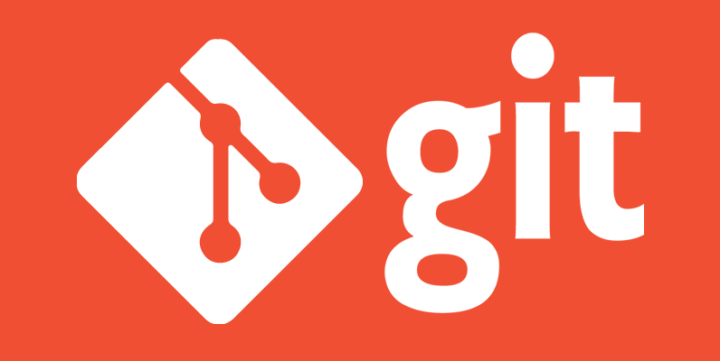

O que o Versionamento com Git me Ensinou sobre Salvar Projetos no Sony Vegas Pro
Publicado em 29 de Junho de 2025 • Leitura de 5 min
Qual editor de vídeo nunca sentiu aquele frio na espinha? Aquele momento em que você faz uma grande alteração, não gosta, e ao tentar voltar atrás, percebe que o 'Ctrl+Z' não é mais suficiente. Ou pior: você salva seu projeto como Clipe_Final_AGORA_VAI_2.veg e acaba com uma dezena de arquivos confusos, sem saber qual é a versão correta.
No mundo do desenvolvimento de software, esse problema foi resolvido há décadas com uma ferramenta chamada Git. O Git é um sistema de controle de versão que permite que programadores salvem 'fotografias' do seu trabalho em qualquer momento, com total segurança e organização. Vindo dessa área, percebi que a filosofia por trás do Git poderia transformar completamente a forma como eu organizo meus projetos no Sony Vegas.
Neste artigo, vou compartilhar como os conceitos de commit, branch e a mentalidade do versionamento me ajudaram a criar um fluxo de trabalho de edição mais seguro, organizado и à prova de desastres.
Seção 1: O git commit e o "Salvar Como..." Inteligente
O que é git commit? Na programação, um git commit é mais do que um simples 'Salvar'. É um ponto de verificação permanente na história do projeto. Cada commit tem uma 'mensagem' que descreve exatamente o que foi alterado. Ex: 'Adicionei o botão de login'.
Eu adotei essa filosofia. Em vez de salvar o projeto com nomes genéricos, eu uso o 'Salvar Como...' (Ctrl+Alt+S) em momentos chave e crio um novo arquivo com um nome que funciona como uma mensagem de commit. Por exemplo:
MeuVideo_v1.0_CorteInicial.veg
MeuVideo_v1.1_CorrecaoDeCorAplicada.veg
MeuVideo_v1.2_TrilhaSonoraSincronizada.veg
O resultado? Eu tenho um histórico claro e navegável do meu projeto. Se um cliente disser 'gostei mais da versão antes da correção de cor', eu não entro em pânico. Eu simplesmente abro o arquivo v1.1 e sei exatamente onde estou.
Seção 2: O git branch e a Edição Experimental Segura
O que é git branch? No Git, quando queremos testar uma ideia nova e radical sem estragar a versão principal do nosso código, nós criamos um 'branch' – uma ramificação. É uma cópia segura do projeto onde podemos experimentar à vontade. Se a ideia funcionar, nós a 'juntamos' (merge) de volta ao projeto principal. Se não, simplesmente descartamos o branch sem nenhum dano."
Eu faço o mesmo com edições experimentais. Digamos que a versão v1.2 do meu vídeo está estável, mas eu quero testar uma montagem completamente diferente para o refrão da música. Em vez de arriscar meu projeto principal, eu crio uma pasta chamada _experimentos/ e salvo uma nova versão lá dentro:
- _experimentos/MeuVideo_v1.3-teste-refrao-rapido.veg
Isso me dá total liberdade criativa. Posso ousar, testar cortes malucos, aplicar efeitos pesados, sabendo que meu projeto principal está seguro e intacto. É a rede de segurança definitiva para a criatividade.
Conclusão: Mais que Organização, uma Filosofia
Adotar a mentalidade do Git na edição de vídeo — usando 'Salvar Como...' como commits para marcar etapas importantes e pastas separadas como branches para experimentação — transformou meu fluxo de trabalho.
Não se trata apenas de organizar arquivos. Trata-se de trazer uma filosofia de segurança, intenção e liberdade para o processo criativo. É saber que você pode sempre voltar atrás, que cada grande passo está documentado e que você tem um espaço seguro para errar e inovar. E essa tranquilidade, para qualquer criativo, não tem preço.